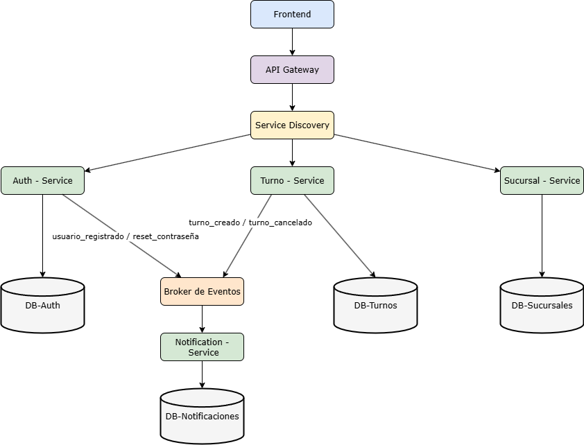

Comunicación entre Servicios + REST + Eventos + Service Discovery
Equipo: Brayan, Eduardo, Victor, Sofia
Proyecto: Gestión de Turnos Banco
🪜 1. Interacciones entre Servicios
Interacción 1
Cliente (Frontend)
Servicio de Autenticación
Credenciales de acceso (correo y contraseña)
El usuario no puede iniciar sesión ni acceder al sistema.
Interacción 2
Servicio de Turnos
Servicio de Sucursales
Consulta de disponibilidad de horarios
No se pueden asignar turnos correctamente.
Interacción 3
Servicio de Turnos
Servicio de Notificaciones
Cambio de estado del turno
El cliente no recibe información actualizada.
🪜 2. REST o Eventos
Interacción
REST
Evento
¿Por qué?
1
✔
Requiere validación inmediata para generar el JSON Web Token (token de autenticación).
2
✔
Necesita confirmación en tiempo real para asignar el turno.
3
✔
Se activa cuando ocurre un cambio en el turno.
🪜 3. Síncrono o Asíncrono
Interacción
Síncrono
Asíncrono
Justificación
1
✔
El usuario espera autenticación inmediata.
2
✔
La asignación depende de disponibilidad en tiempo real.
3
✔
La notificación no bloquea el flujo principal.
🪜 4. Eventos Importantes del Sistema
1️⃣ Turno creado:
Se genera cuando un cliente registra un nuevo turno en el sistema. Este evento actualiza la disponibilidad de la
sucursal y puede activar una notificación al usuario.
2️⃣ Cambio de estado del turno:
Ocurre cuando el turno pasa de pendiente a atendido o cancelado. Permite actualizar el panel de atención y los
reportes del sistema.
3️⃣ Usuario autenticado:
Se produce cuando las credenciales son validadas correctamente y se genera el
JSON Web Token (token de autenticación), habilitando el acceso según el rol del usuario.
🪜 5. Análisis de Fallos
Base de datos
Se perdería acceso a turnos activos e historial del sistema.
Podría continuar parcialmente, pero no permitir nuevas operaciones.
Mediante réplicas, copias de seguridad automáticas y alta disponibilidad en la nube.
🪜 6. Service Discovery
Los demás servicios no podrían comunicarse con él.
A través de un sistema de Service Discovery.
Permite comunicación dinámica y escalabilidad entre microservicios.
Entre los servicios de Autenticación, Turnos y Sucursales.
🪜 7. Mini Diagrama
Cliente → Service Discovery → Servicio de Autenticación
Servicio de Turnos → Service Discovery → Servicio de Sucursales

💡 Ayuda rápida
REST → petición directa
Evento → algo ocurrió
Síncrono → espera respuesta
Asíncrono → continúa sin esperar
Service Discovery → permite encontrar servicios automáticamente